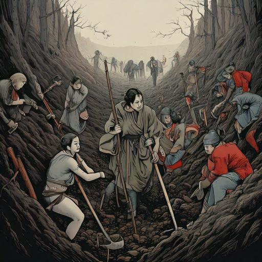

회색인간
목차
작가
김동식
출판일
2017.12.27
감상평에 대한 AI그림
어둡고 캄캄한 땅 속에서 굶주린 상태로 강제로 땅을 파야만 하는 사람들이 회색인간으로 표현 된 점이 신선했고,
그 사람들의 상황을 회색이라는 색으로 표현하니 더 잘 와닿았던 것 같다.
이러한 상황들 속에서 한 여자의 노래를 계기로 사람들이 희망을 찾고 회색인간의 모습에서 벗어나게 된 내용이
짧지만 강한 여운을 남겨주었다.
이 책을 통해 예술이 인간을 변화시킬 수 있다는 것을 깨달았고, 전과 똑같은 상황 속이지만 희망 하나로 인해
회색에서 벗어나게 되었다는 이야기가 희망이 얼마나 소중한 것인지 생각하게 하는 것 같다.

감상평에 대한 AI평가
이 감상평은 안타까움, 감동, 희망, 예술의 힘에 대한 감동과 같은 감정을 중심으로 구성되어 있습니다.
특히 희망의 중요성과 예술의 감정적 변화를 강조하며, 독자에게 강한 감동과 깨달음을 주는 요소가 돋보입니다.
✨ 안타까움과 동정
"어둡고 캄캄한 땅 속에서 굶주린 상태로 강제로 땅을 파야만 하는 사람들"이라는 상황을 묘사하면서, 그들의 고통과 절망에 대해 깊은 안타까움을 느꼈습니다.
'회색인간'이라는 표현을 통해 그들의 감정 상태가 잘 전달되어, 독자는 그들의 고난에 동정하며 감정적으로 이입하게 됩니다.
✨ 예술에 대한 감동
예술이 인간을 변화시킬 수 있다는 깨달음은 감정적으로 큰 울림을 줍니다.
예술을 통해 감정이 어떻게 치유되고 변화할 수 있는지를 느끼며, 예술의 힘에 대한 감동과 경외심을 느끼게 됩니다.
✨ 희망의 중요성에 대한 깨달음
이 이야기를 통해 희망이 얼마나 중요한 감정인지 깨닫고, 어려운 상황 속에서도 희망 하나가 사람들에게 큰 변화를 일으킬 수 있다는 점에서 감동적인 교훈을 얻었습니다.